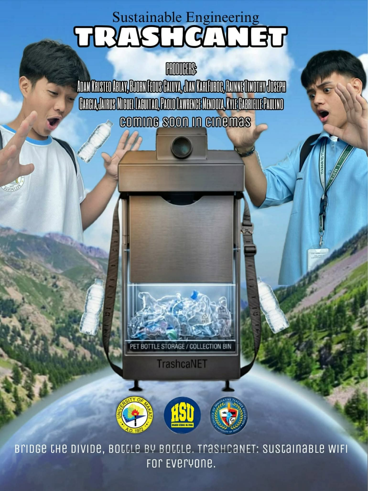
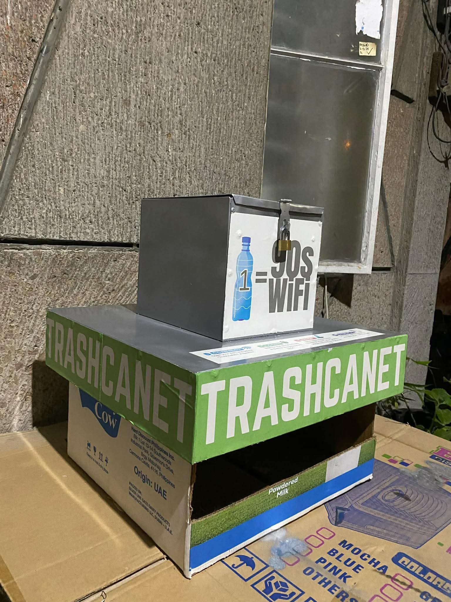
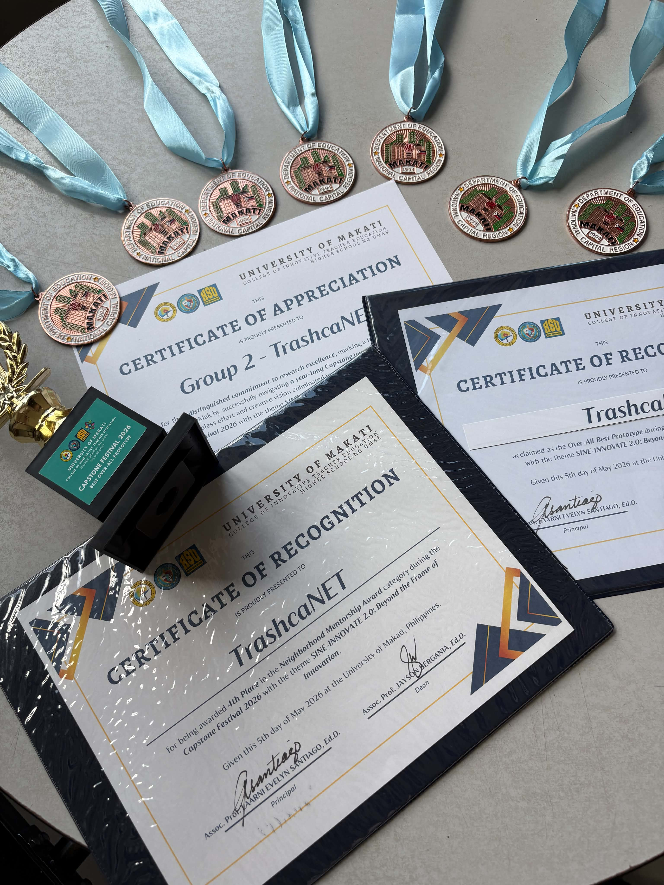

WELCOME TO TRASHCANET
DISCOVER TRASHCANET.
Discover smarter waste disposal, proper PET bottle segregation, and a cleaner environment through TRASHCANET.
EXPLORE MORE


SMART WASTE MANAGEMENT
MEET TRASHCANET
Discover how TRASHCANET helps promote proper
PET bottle disposal
through smart sensing, verification, and data-driven waste management.
SMART WASTE MANAGEMENT
TRASHCANET is a smart trash bin designed to encourage proper PET bottle disposal through smart sensing, verification, and data-driven waste management.
01
SMART DETECTION
Uses sensors to detect and identify waste placed inside the TRASHCANET bin.
02
PET VERIFICATION
Helps verify PET bottles and encourages users to dispose of recyclable bottles properly.
03
DATA-DRIVEN
Collects useful disposal data that can help improve waste management and recycling practices.